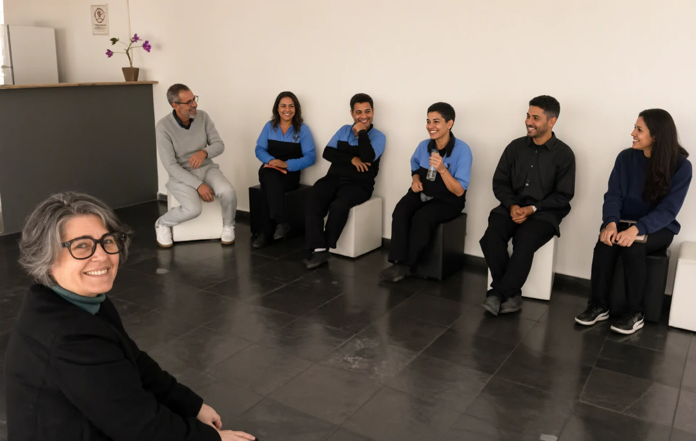
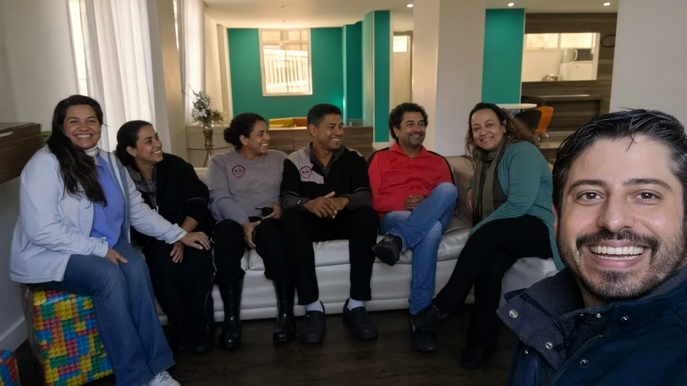
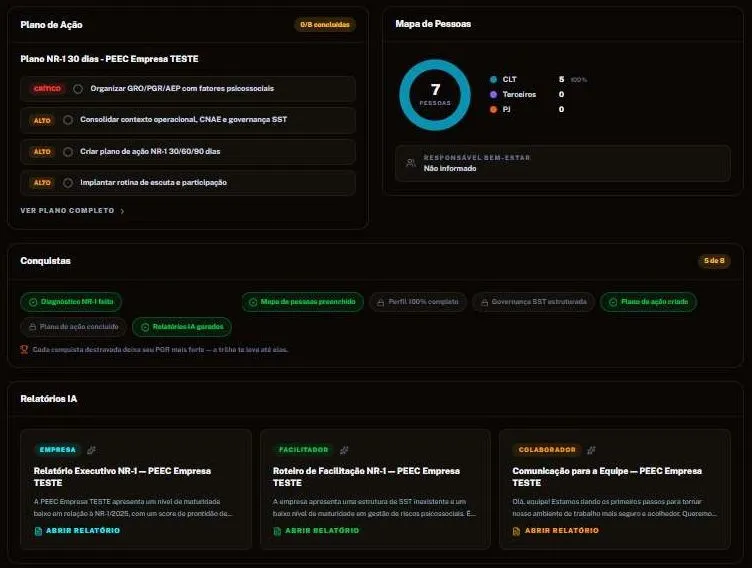

A NR‑1 mudou.
Formação SMO, extensão universitária de 200 horas: terapeutas e profissionais de saúde e de RH aprendem a cuidar dos riscos psicossociais dentro das empresas, como Facilitador de Bem-Estar Organizacional.
R$ 1.309
à vista com 30% off (era R$ 1.870), ou 12x de R$ 135,38
MECExtensão universitária de 200 horas · 7 dias de garantia
Tirar dúvida no WhatsAppSem gestão: os riscos ficam no vermelho
Matriz de risco do PGRProbabilidade × severidade
- 200 horas8 módulos de 25 h
- Certificado universitárioInstituição credenciada no MEC
- 12 meses de acessoLiberado na hora
- 7 dias de garantiaReembolso pela Hotmart

Poucos entram nas empresas
As empresas agora precisam cuidar da saúde mental, e quase ninguém sabe conduzir esse trabalho lá dentro.
Desde 26 de maio de 2026, a NR-1 exige que as empresas identifiquem e gerenciem os fatores de risco psicossociais do trabalho: sobrecarga, assédio, metas abusivas, falta de clareza de papéis, liderança despreparada.
Muitos terapeutas, psicólogos e profissionais de RH têm técnica de sobra. O que falta é modelo: como apresentar um programa a uma empresa, falar a linguagem dela e atuar dentro dos limites da lei.
Técnica você já tem. O que falta é o caminho pra entrar na empresa.
Saúde mental virou pauta
- 12 bilhõesde dias de trabalho perdidos por ano no mundo por depressão e ansiedade: US$ 1 trilhão em produtividade.Organização Mundial da Saúde
- £ 4,70 de voltaem média, para cada £ 1 que empresas do Reino Unido investem em saúde mental no trabalho.Deloitte, 2024, média de 26 estudos
- 46 mil trabalhadoresquem fez só aplicativos, meditação e cursos de resiliência não ficou melhor. O autor recomenda mudar as condições de trabalho.Universidade de Oxford, 2024
Por isso o Facilitador trabalha com a organização do trabalho, e não só com a pessoa. São dados gerais, não promessa de resultado.
Quem é o Facilitador
O Facilitador de Bem-Estar Organizacional (FBO) é um profissional que atua de forma complementar, educativa e vivencial, promovendo saúde mental e bem-estar no trabalho, sem caráter clínico. Você não precisa ser psicólogo.
O que o FBO faz
- Lê as informações que a empresa já tem: PGR, clima, afastamentos, rotatividade
- Conduz Rodas Estruturadas sobre comunicação, convivência, conflito e estresse
- Conduz práticas breves de regulação emocional: respiração guiada, atenção plena, consciência corporal
- Planeja ações contínuas de bem-estar, feitas para cada empresa
- Apresenta programas ao RH, ao SESMT, às lideranças e à direção
O que o FBO não faz
- Diagnóstico clínico, terapia ou prescrição
- Nenhum ato privativo de profissão regulamentada
- Promessa de conformidade com a NR-1
- Substituir SESMT, médico do trabalho, psicólogo ou engenheiro de segurança
São esses limites que dão segurança jurídica ao seu trabalho e fazem a empresa levar você a sério.
Como é o trabalho do FBO, na prática

Para preservar a identidade de cada colaborador, os rostos nas fotos foram substituídos por rostos fictícios.
Você não atua sozinho
O FBO trabalha com uma plataforma.
Diagnóstico, plano de ação, registro de cada Roda e reavaliação a cada 90 dias ficam na SaudIA PEEC. Você conduz as pessoas; a plataforma guarda o que a empresa precisa mostrar.
Com o certificado de extensão, você fica apto a atuar como FBO no Programa SMO da SaudIA PEEC, da Engenharia da Humanidade.

Os 8 módulos, 25 horas cada
Videoaulas, materiais complementares, mentorias gravadas e encontros de perguntas e respostas. Toque em um módulo para ver o que ele traz.
Módulo 1Fundamentos da Saúde Mental Organizacional e NR-01 na Prática
O que é saúde mental organizacional, o que a NR-1 pede e como explicar isso a um gestor.
Módulo 2Bases Neurocientíficas e Psicofisiológicas da Regulação Emocional
O que acontece no corpo e na mente no estresse, e como explicar sem jargão.
Módulo 3Método PNQ® nas Rodas Estruturadas e nas Práticas
Os princípios da PNQ® levados às Rodas Estruturadas e às práticas, sem linguagem clínica.
Módulo 4Riscos Psicossociais (GRO/PGR) e Clima Organizacional Sustentável
Ler dados de clima e de riscos e transformá-los em ações de bem-estar.
Módulo 5Práticas Integrativas (PNPIC) com Ética e Responsabilidade
Quais princípios das práticas integrativas podem entrar numa empresa, e quais não.
Módulo 6Práticas Integrativas com Toque, em Formato Não Clínico
Práticas em formato não clínico, com consentimento e roteiro.
Módulo 7Plano de Implementação na Empresa
Montar um programa para uma empresa: objetivos, ações, cronograma e indicadores.
Módulo 8Modelos de Aplicação em Empresas com Comunicação Assertiva
Apresentação, proposta e pitch para a diretoria, sem inflar promessas.
Kit pronto para começar
- 3 modelos prontos de workshop
- 2 modelos de palestra
- 1 roteiro de Roda Estruturada
- Checklist de implementação
- Termo de consentimento
- Plano de ação
E apoio no lado comercial
Nas mentorias e nos encontros de perguntas e respostas, a equipe ajuda você a:
- Escolher empresas com potencial e chegar a quem decide
- Conduzir a primeira conversa e responder às objeções
- Mostrar o valor do programa com dados
- Montar a proposta
Quem conduz: Rafael Macedo
Criador do Método SMO, coordenador pedagógico e professor do curso. Cofundador da Engenharia da Humanidade e coordenador técnico do Programa SMO e da SaudIA PEEC.
Foram 11 anos na aviação, como chefe de cabine e instrutor em rota, num setor em que falha humana tem custo irreversível. Lá ele aprendeu que segurança não é cartaz na parede: é como o trabalho está organizado, e se as pessoas conseguem falar antes de o problema virar acidente.
Engenheiro civil, com pós-graduação em Neuropsicologia e em Psicologia Organizacional, e pós-graduando em Engenharia de Segurança do Trabalho.
O mercado se dividiu entre a consultoria que entrega documento sem tocar em ninguém e quem cuida da pessoa sem falar a língua da diretoria. O curso forma quem trabalha na ponte entre os dois.
Formação SMO com 30% off
Condição válida até 5 de dezembro
- 8 módulos, 200 horas de formação
- Mentorias gravadas e encontros de perguntas e respostas
- Workshops, palestras, roteiro, checklist, termo e plano de ação
- Apoio no lado comercial: da primeira conversa à proposta
- Certificado de extensão universitária, instituição credenciada no MEC
- 12 meses de acesso, liberado na hora
R$ 1.309 à vista
Era R$ 1.870. Ou 12x de R$ 135,38 no cartão.
Quero minha vaga com 30% offCompra segura pela Hotmart, no Pix ou no cartão. O cupom SMOBLACK2026 já vai aplicado no checkout. No parcelado, a Hotmart acrescenta juros.
Se não for para você, peça o reembolso pela Hotmart em até 7 dias depois da compra.
Perguntas frequentes
Preciso ser psicólogo ou terapeuta?
Não. O curso é para profissionais e graduandos de saúde, ciências humanas, gestão, segurança do trabalho e recursos humanos, e para terapeutas e facilitadores que querem atuar de forma complementar em programas de saúde mental nas empresas.
O curso me habilita a fazer terapia dentro das empresas?
Não. A formação é para atuação complementar, sem caráter clínico. Não substitui acompanhamento médico ou psicológico e não habilita atos privativos de profissões regulamentadas.
Que certificado eu recebo?
Um certificado de extensão universitária de 200 horas, emitido pela instituição de ensino superior parceira, credenciada no MEC.
Como são as aulas e quando recebo o certificado?
Tudo fica disponível desde a inscrição, por 12 meses: videoaulas, materiais, mentorias gravadas e encontros de perguntas e respostas. A avaliação final e o certificado ficam disponíveis a partir de 3 meses de curso.
Quanto custa e posso parcelar?
Na Black Friday, até 5 de dezembro: R$ 1.309 à vista (Pix ou cartão) ou 12x de R$ 135,38 no cartão, total de R$ 1.624,56 com os juros do parcelamento da Hotmart. O cupom SMOBLACK2026 já vai aplicado pelos botões desta página.
O curso garante trabalho ou resultado?
Não. Resultados dependem do contexto, da adesão e da continuidade. Mas você não fica sozinho: nas mentorias, a equipe apoia você também no lado comercial.
E se eu desistir?
Você tem 7 dias de garantia pela Hotmart, contados da compra, para pedir o reembolso.
Ficou com outra dúvida? Fale com a equipe no WhatsApp
Garanta sua vaga
Black Friday até 5 de dezembro: R$ 1.309 à vista ou 12x de R$ 135,38.
Quero minha vaga com 30% off